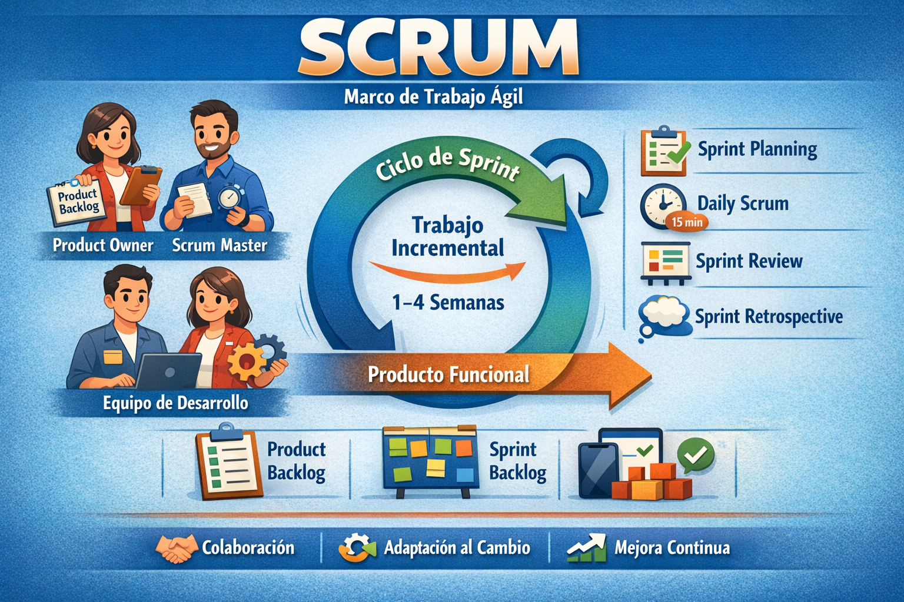

Scrum
Scrum es uno de los marcos de metodología ágil más populares, que ayuda a los equipos a abordar proyectos complejos dividiendo el trabajo en ciclos iterativos más pequeños llamados sprints. Está diseñado para impulsar la colaboración, aumentar la transparencia e impulsar la mejora continua. Tanto si estás creando software, gestionando solicitudes de TI o coordinando proyectos interdisciplinares, la metodología scrum conecta reuniones, herramientas y roles que funcionan en conjunto para ayudaros a ti y a tu equipo a estructurar y gestionar el trabajo.
Scrum es un marco de trabajo ágil que se utiliza para gestionar y desarrollar proyectos de manera iterativa e incremental. Se basa en ciclos cortos llamados sprints, durante los cuales un equipo multidisciplinario trabaja en la entrega de pequeñas partes funcionales del producto. Scrum promueve la colaboración constante, la adaptación al cambio y la mejora continua mediante roles definidos como el Product Owner, el Scrum Master y el equipo de desarrollo, así como reuniones periódicas que permiten planificar, revisar y optimizar el trabajo realizado.
